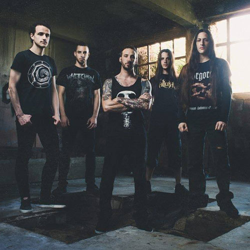
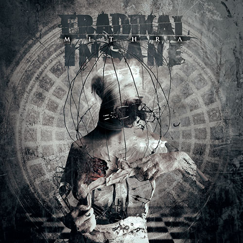

Eradikal Insane is a French death metal band that formed in Marseille, France, in 2004. The group consists of guitarists and founders Nicolas and Florian Escoffier, vocalist Cyril "Jtrom" Van Zandijcke, drummer R and bassist Loris Guillen. According to members, the name of the band is a neologism to describe a very high level of craziness. The band has released three demos and one EP."
A digital single "Born From Punishment" was released on August 1, 2009."
On September 27, 2010, the band entered the Studio Hyperion in Marseille to record a first EP The Dementia Process, which was released on April 16, 2011. This first effort received positive ratings by French and international webzines."
Following the release of the EP and promotional shows, Eradikal Insane launched its debut music video for the song "God Bless You" on September 23, 2012."
After almost two years of touring and writing, the band entered the studio to record its debut album Mithra on January 5, 2014, tentatively scheduled for late 2014 release. In the same year, the band played some shows in France and went on a ten days long tour in Russia. Due to problems with the studio and the production, the album was postponed until 2015."
Back from a French tour including a show in Luxembourg during May 2015, Eradikal Insane announced Mithra to be out September 7, 2015, which will be followed by a tour in Canada in the same month.
 